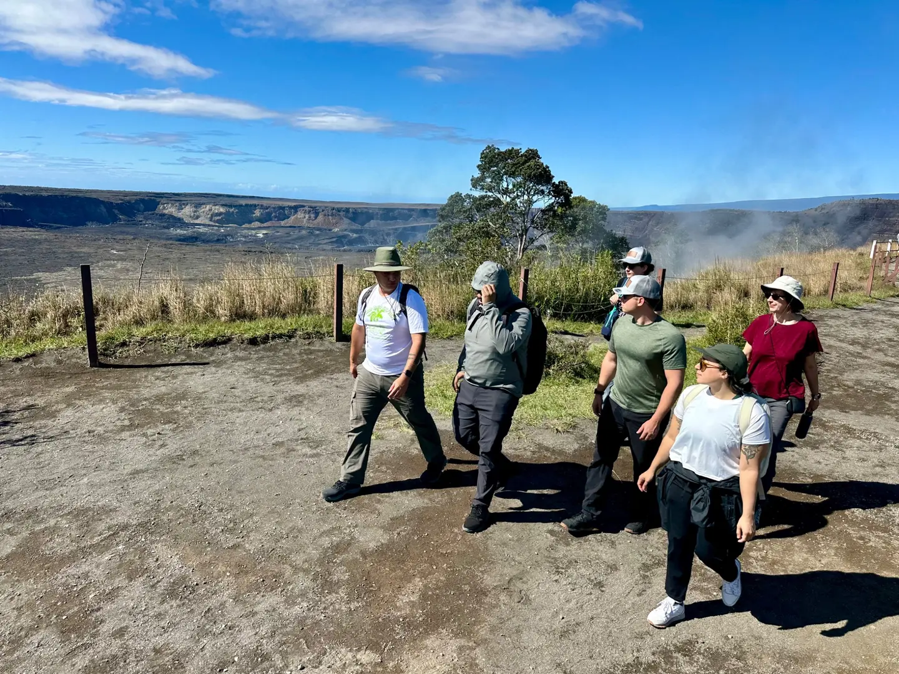
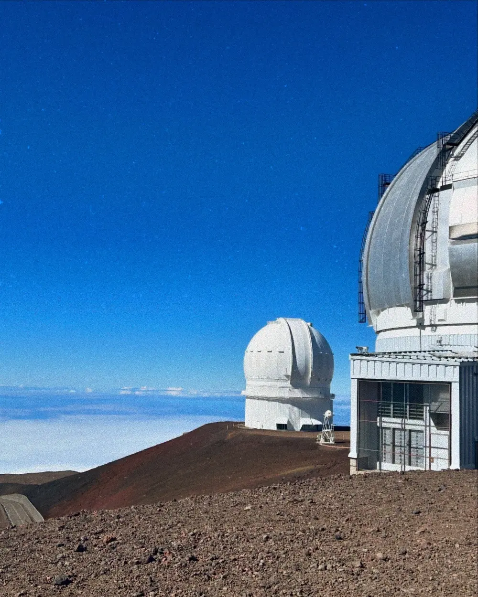

Portfolio and field strategy
Lead national partner ecosystems, portfolio planning, grant-funded implementation, evaluation, and continuous improvement—connecting mission priorities with the realities of museums, libraries, schools, and communities.
Learning systems strategist · Public engagement leader · Writer
Across NASA, higher education, museums, and national partner networks, I design the strategies and conditions that help knowledge travel—and help more people belong in discovery.

Experience · 2026 perspective
My work has evolved from designing strong learning experiences to shaping the conditions that allow entire ecosystems of people, institutions, evidence, and ideas to move together.
Program strategy leader for NASA-connected education and public engagement across Hubble, Webb, Roman, and NASA’s Universe of Learning.
Lead national partner ecosystems, portfolio planning, grant-funded implementation, evaluation, and continuous improvement—connecting mission priorities with the realities of museums, libraries, schools, and communities.
Shape public-engagement pathways for the Nancy Grace Roman Space Telescope; lead expansion of community host-site participation; and translate emerging mission science into usable resources for informal educators.
Lead evaluation of Webb’s interactive STORIMap experience, aligning audience learning, usability, mission messaging, stakeholder needs, and evidence for future product decisions.
Serve as audience lead and strategic advisor for complex science storytelling—from black-hole explainers and Webb imagery to place-based partnerships such as Longwood Gardens’ celestial winter tours.
Selected work · Systems made visible
I work where strategy meets implementation: finding the route from a powerful idea to durable participation.

01 / Field buildingBuilding the connective infrastructure that helps museums, libraries, and community organizations bring NASA science into local context.
View case study↗
Partnering to bring cosmic visuals and astronomical interpretation into a beloved public garden.
Case study in development
Helping turn Webb’s launch and First Images into supported, locally led participation across all 50 states and Puerto Rico.
View case study↗Seven projects. Six forms of value. One connected practice.
View the complete Work index →How I work · The connective tissue
A resource succeeds only when the surrounding relationships, decisions, evidence, and routes to participation can carry it.
Map the people, incentives, constraints, and pathways around the problem.
Keep the rigor intact while creating a usable point of entry.
Treat partners and communities as co-designers with knowledge of their own.
Use evidence and reflection to improve the system, not merely prove it worked.
 Harvard Graduate School of Education · Class of 2026
Harvard Graduate School of Education · Class of 2026Voice · “What Held”
“One where attention is a form of care. One where making room is part of the work.”
Selected as one of three student speakers for HGSE’s 2026 Convocation, I spoke about the practices that let people with full lives make space for one another—and what that asks of the future of education.
Read the Harvard feature↗The throughline
I am a program strategy leader and educator working across science, culture, and higher education. My practice brings together field building, research translation, partner strategy, evaluation, and public storytelling.
Currently, I lead NASA-connected education and public engagement work at the Space Telescope Science Institute. I hold an Ed.M. in Educational Leadership from Harvard and an M.A. in Art and Museum Studies from Georgetown.
Read the full story